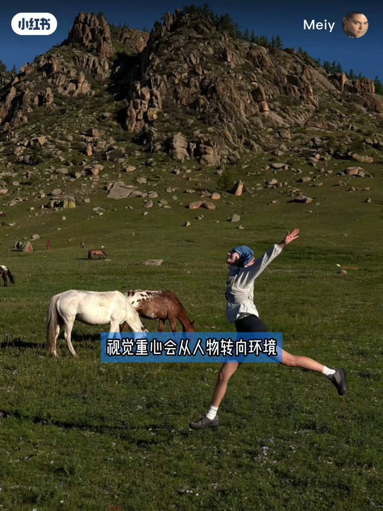
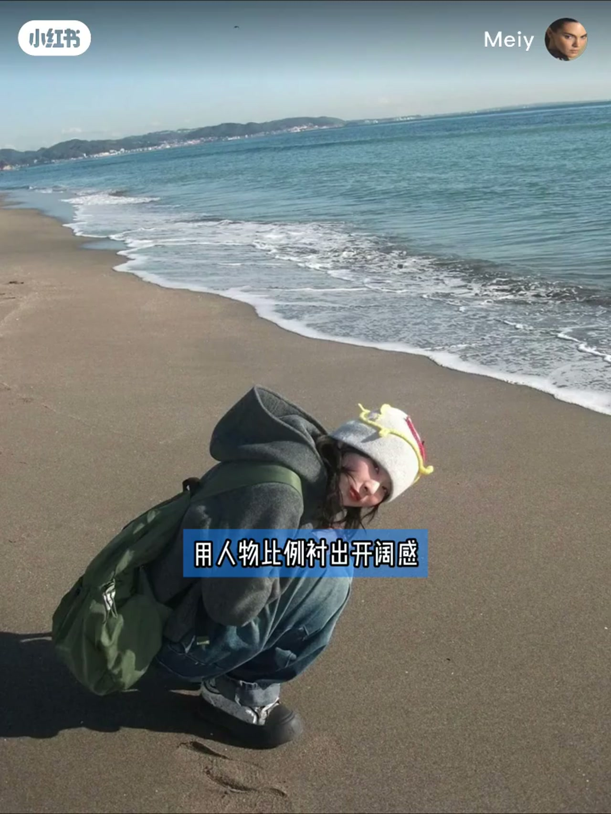
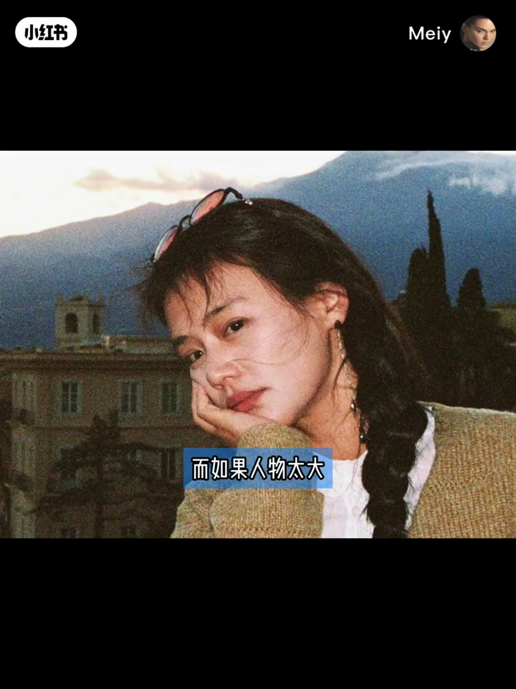
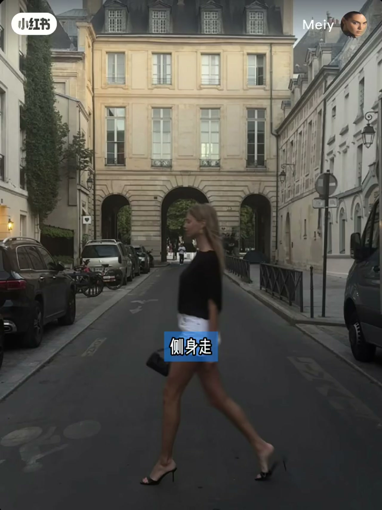

内容要点
Meiy 提出一个很具体的判断：旅行照「景越大，旅行感才越强」——不是大景天然更高级，而是人物占比变小后，视觉中心会从人转向环境。咖啡馆半身照可以很好看，但更像生活方式照；想让别人一眼感到你在旅行，就要放大环境信息量，并用人与环境的比例拉开空间尺度。
知识结构
景大旅行感强，因人物占比变小后视觉中心转向环境；半身咖啡馆照更像生活方式照。
海边留天空与海岸线、用人物比例衬开阔感；街道用纵深让人往深处走；山野建筑用大背景做尺度对照。
人物太大信息被挤掉，地方会变成个人写真；多一层层次，照片从平面记录变成可走的空间。
人物不必一直看镜头，背对、侧身、站边缘或很小身影都行；一般控制在画面高度约四分之一以内；核心是抽离——让观者从看你切到看你所在的地方。
旅行感的关键变量是人与环境的距离：把人缩小到能辨认但不抢戏，让天空、街道纵深或山野尺度成为主角。人物太大容易拍成写真，小到看不见又变纯风景；大约控制在画面高度四分之一以内，再按开阔程度微调，并把「看镜头」换成背对、侧身或边缘站位。
00:00-00:23景越大旅行感越强：视觉中心从人转向环境
Meiy 开场：「我发现旅行照景越大，旅行感才越强。」原因不是大景天然高级，而是人物在画面里占比变小后，视觉中心会从人物转向环境。
她用咖啡馆举例：桌上有咖啡、穿当天衣服拍半身照，照片可以很好看，但更像一张生活方式照片。想让别人一眼感受到你在旅行，就要把环境的信息量放大。

00:23-00:43海边、街道与山野：用人物比例衬出开阔
去海边，把天空和海岸线一起留下，用人物比例衬出开阔感；去城市街道，用道路纵深让人物往画面深处走，把建筑和街道关系一起拍进去；山野与建筑空间，则用大背景形成尺度对照。
当人物变小，人与环境之间的比例被拉开，空间的开阔程度也会被感知出来。

00:43-01:03人物太大变写真，层次多一层才可走
即使没有明显地标，别人也更容易感觉到你出去玩了，甚至产生「我也想去这里」的感觉。而如果人物太大，这些信息就会被挤掉，容易把一个地方拍成一个人的写真。
所以层次要多一层：照片就能从平面记录变成可走路的空间，观者会觉得自己也站在那里。

01:03-01:33背对侧身与四分之一高度：旅行照的抽离
旅行照里人物也不一定要一直看镜头：背对着、侧身走、站在画面边缘，甚至只留下一个很小的身影都成立。你不需要一直承担整张照片的主体，但也不能小到看不见、失去辨识度，否则又会变成单纯风景照。
一般可以把人物控制在画面高度的四分之一以内，再根据环境开阔程度调整。简单来说，旅行照的核心其实就是抽离——把自己从日常生活里退出来，让观者从看你切换到看你所在的地方。

完整转录（45段）
以下文本由 Whisper medium 模型自动转录，可能存在少量识别误差，已尽可能修正。
我发现旅行照景越大 旅行感才越强
不是因为大景天然更高级
而是人物在画面里的占比变小后
视觉中心会从人物转向环境
你坐在咖啡馆里 桌上有咖啡
穿着当天的衣服拍一张半身照
照片可以很好看
但它更像一张生活方式照片
想让别人一眼感受到你在旅行
就要把环境的信息量放大
去海边 把天空和海岸线一起留下
用人物比例称出开阔感
去城市街道用道路的纵深
让人物往画面深处走
把建筑和街道关系一起拍进去
山野 建筑空间
用大背景形成尺度对照
当人物变小
人与环境之间的比例被拉开
空间的开阔程度也会被感知出来
即使没有明显地标
别人也会更容易感觉到你出去玩乐
甚至会让人产生我也想去这里的感觉
而如果人物太大
这些信息就会被拆掉
容易把一个地方拍成了一个人的写真
所以层次要多一层
照片就能从平面记录变成可走路的空间
观者会觉得自己也站在那里
而旅行照里
人物也不一定要一直看镜头
背对着 侧身走
站在画面边缘
甚至只留下一个很小的身影都成立
你不需要一直承担整整照片的趋势
但人物也不能小到看不见
小到失去辨识度
照片又会变成单纯的风景照
一般可以把人物
控制在画面高度的四分之一以内
再根据环境的开阔程度调整
简单来说
旅行照的核心其实就是抽离
把自己从日常生活中里退出来
让观者从看你切换到看你所在的地方